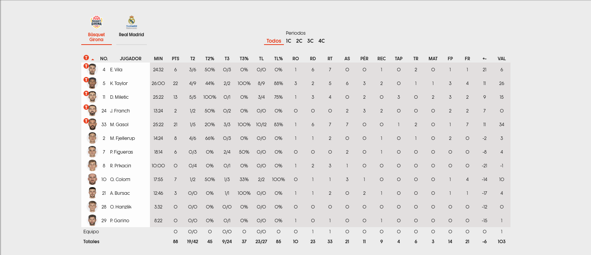

import pandas as pd
import os
from funciones_auxiliares import *
import warnings
warnings.filterwarnings('ignore')
2.3 Descarga de Box Score#
La tabla del Box Score es la tabla de información que se utilizaba habitualmente en los partidos de baloncesto para reflejar las estadísticas obtenidas por los jugadores durante estos. A través de este notebook se buscará dar explicación del lugar de donde ha sido extraida la informació como a que información ha sido descargada. Para ello, se estructurará el notebook en los siguiente puntos:
1. Descripción del portal web. Se hará una revisión de la información que es almacenada dentro del portal y se explicará el método de descarga de cada uno de los box scores obtenidos por los equipos.
2. Revisión de información y estructura de los ficheros. Tras la descarga de la información, se hará una revisión de la información individualizada de los ficheros descargados y la revisión conjunta de los ficheros descargados.
A través de esos puntos se realizará la comprensión y entendimiento del trabajo realizado para la descarga de los ficheros referentes al box score.
1. Descripción del portal web y método de descarga#
Para la descarga del Box Score de cada uno de los partidos ha sido utilizado la página web https://jv.acb.com/es/ que como se ha comentado en la sección de la creación del Diccionario de partidos es la página web en la que los aficionados puede ver los resultados y estadísticas de los partidos disputados. Como se mostró durante la creación del diccionario, cada partido disputado tiene una url la cual permite al usuario acceder a las estadísticas del partido. Esta url, está compuesta por el enlace a la página oficial de la jornada virtual de la liga junto a un identificador numérico del partido y la sección que se quiere visitar. Es por este motivo, que para poder acceder al Box Score de cualquier partido la url debe estar compuesta por la url (https://jv.acb.com/es/), el identificador del partido y la sección estadisticas/ficha.
Teniendo esto presente, se muestra a continuación el partido disputado en la temporada 2022-2023 entre el Básquet Girona y el Real Madrid durante la primera jornada de la temporada a la que se puede tener acceso mediante el enlace https://jv.acb.com/es/103350/estadisticas/ficha. Dentro de la página web del partido, podemos encontras dos secciones, la primera de ellas es la siguiente:
En esta primera sección podemos encontrar los equipos participantes en el encuentro, la fecha y el resultado del partido junto al tanteo por cuartos. Además, se puede observar como el Box Score se encuentra dentro del apartado Estadísticas en su sección de Ficha.
Por otro lado, la segunda sección de la página web es en la que se muestra el Box Score de los equipos. Esta sección es la siguiente:

Esta sección está compuesta por dos botones principales los cuales nos permiten seleccionar el equipo del que se quieren visualizar las estadísticas además de cinco botones secundarios los cuales permiten visualizar la estadísticas complentas del partido o las estadísticas de un cuarto específico. Dentro del Box Score podemos encontrar que se almacena la información de cada uno de los jugadores que participaron en el encuentro para uno de los equipos junto a las estadísticas del equipo y las estadísticas totales del equipo. Dentro de la información que es almacenada en el Box Score encontramos la siguiente:
NO. Número del jugador.
JUGADOR. Nombre del jugador.
MIN. Minutos disputados por el jugador.
PTS. Puntos realizados por el jugador.
T2. Tiros anotados y realizados de dos puntos por el jugador.
T2%. Porcentaje de tiros anotados con respecto a los lanzados de dos puntos por el jugador.
T3. Tiros anotados y realizados de tres puntos por el jugador.
T3%. Porcentaje de tiros anotados con respecto a los lanzados de tres puntos por el jugador.
TL. Tiros libres anotados y realizados por el jugador.
TL%. Porcentaje de tiros libres anotados con respecto a los lanzados por el jugador.
RO. Rebotes ofensivos capturados por el jugador.
RD. Rebotes defensivos capturados por el jugador.
RT. Rebotes totales capturados por el jugador.
AS. Asistencias realizadas por el jugador.
PÉR. Pérdidas cometidas por el jugador.
REC. Recuperaciones realizadas por el jugador.
TAP. Tapones realizados por el jugador.
TR. Tapones realizados por el jugador.
MAT. Mates realizados por el jugador.
FP. Faltas personales realizadas por el jugador.
FR. Faltas recibidas por el jugador.
‘+-’. Puntos a favor o en contra dugador está en pista.
VAL. Valoración del jugador en el partido.
A través del Diccionario de partidos y técnicas de web scrapping que permite la interacción con el navegador y la descargar del código fuente de partidos, han sido descargados todos los Box Scores de los partidos recogidos dentro del diccionario. Para esta descarga, ha sido desarrolla el script de código 03_Descarga_Box_Score que permite la descarga y almacenamiento de los Box Score de ambos equipos en las rutas establecidas.aloración del jugador.
2. Revisión de información y estructura de los ficheros#
Como ha sido comentado durante el apartado anterior, se ha realizado la descarga de todos los Box Scores de los partidos almacenados en el Diccionario de partidos. Es por este motivo que para entender y explicar que información ha sido descargada, se pasa a realizar la carga del primer partido disputado en cada temporada en la primera jornada:
# Ruta para acceder a la información de las jornas de cada una de las temporadas
ruta_jornadas = 'E:/TFM/02. Datos/ACB/JORNADAS'
# Ruta al primer partido de cada temporada
partido_2019 = 'E:/TFM/02. Datos/ACB/JORNADAS/2019/Jornada 1/20190924_Montakit Fuenlabrada_VS_San Pablo Burgos/Montakit Fuenlabrada.csv'
partido_2020 = 'E:/TFM/02. Datos/ACB/JORNADAS/2020/Jornada 1/20200919_Acunsa GBC_VS_Real Madrid/Acunsa GBC.csv'
partido_2021 = 'E:/TFM/02. Datos/ACB/JORNADAS/2021/Jornada 1/20210918_Coosur Real Betis_VS_MoraBanc Andorra/Coosur Real Betis.csv'
partido_2022 = 'E:/TFM/02. Datos/ACB/JORNADAS/2022/Jornada 1/20220928_Bàsquet Girona_VS_Real Madrid/Bàsquet Girona.csv'
# Lectura de un partido de muestra cada temporada
df_partido_2019 = pd.read_csv(partido_2019, sep=';')
df_partido_2020 = pd.read_csv(partido_2020, sep=';')
df_partido_2021 = pd.read_csv(partido_2021, sep=';')
df_partido_2022 = pd.read_csv(partido_2022, sep=';')
Tras realizar la carga de los cuatro partidos, se pasa a mostrar que información ha sido cargada de cada uno de los Box scores:
# Visualización de columnas de cada dataframe
print("###############################################")
print("# COLUMNAS DEL BOX SCORE EN CADA TEMPORADA")
print("###############################################")
l_col_2019 = [col for col in df_partido_2019.columns]
print("TEMPORADA 2019:",' | '.join(l_col_2019))
l_col_2020 = [col for col in df_partido_2020.columns]
print("TEMPORADA 2020:",' | '.join(l_col_2020))
l_col_2021 = [col for col in df_partido_2021.columns]
print("TEMPORADA 2021:",' | '.join(l_col_2021))
l_col_2022 = [col for col in df_partido_2022.columns]
print("TEMPORADA 2022:",' | '.join(l_col_2022))
###############################################
# COLUMNAS DEL BOX SCORE EN CADA TEMPORADA
###############################################
TEMPORADA 2019: Unnamed: 0 | NO. | JUGADOR | MIN | PTS | T2 | T2% | T3 | T3% | TL | TL% | RO | RD | RT | AS | PÉR | REC | TAP | TR | MAT | FP | FR | +- | VAL
TEMPORADA 2020: Unnamed: 0 | NO. | JUGADOR | MIN | PTS | T2 | T2% | T3 | T3% | TL | TL% | RO | RD | RT | AS | PÉR | REC | TAP | TR | MAT | FP | FR | +- | VAL
TEMPORADA 2021: Unnamed: 0 | NO. | JUGADOR | MIN | PTS | T2 | T2% | T3 | T3% | TL | TL% | RO | RD | RT | AS | PÉR | REC | TAP | TR | MAT | FP | FR | +- | VAL
TEMPORADA 2022: Unnamed: 0 | NO. | JUGADOR | MIN | PTS | T2 | T2% | T3 | T3% | TL | TL% | RO | RD | RT | AS | PÉR | REC | TAP | TR | MAT | FP | FR | +- | VAL
Como puede observar, cada uno de los Box Scores almacena la misma información para cada una de las temporadas. Sin embargo, se observa que en todas las temporadas existe una columna llamada Unnamed: 0 por lo que se pasa revisar la estructura del primer partido de la temporada 2022-2023:
print("###############################################")
print("# ANÁLISIS DE BOX SCORE 2022")
print("###############################################")
print("Nº de columnas:", len(df_partido_2022.columns))
print("Nº de registros:", len(df_partido_2022))
print("Box Score 2022:")
print(df_partido_2022.to_string(index=False, col_space=4))
###############################################
# ANÁLISIS DE BOX SCORE 2022
###############################################
Nº de columnas: 24
Nº de registros: 14
Box Score 2022:
Unnamed: 0 NO. JUGADOR MIN PTS T2 T2% T3 T3% TL TL% RO RD RT AS PÉR REC TAP TR MAT FP FR +- VAL
NaN 4.0 E. Vila 24:32 6 3/6 50% 0/3 0% 0/0 0% 1 6 7 0 0 1 0 2 0 1 1 21.0 6.0
NaN 5.0 K. Taylor 26:00 22 4/9 44% 2/2 100% 8/9 88% 3 2 5 6 3 2 0 1 1 3 4 11.0 26.0
NaN 11.0 D. Miletic 25:22 13 5/5 100% 0/1 0% 3/4 75% 1 3 4 0 2 0 3 0 2 3 2 9.0 15.0
NaN 24.0 J. Franch 13:24 2 1/2 50% 0/2 0% 0/0 0% 0 0 0 2 3 2 0 0 0 2 2 7.0 0.0
NaN 33.0 M. Gasol 25:22 21 1/5 20% 3/3 100% 10/12 83% 1 6 7 7 0 0 1 2 0 1 7 11.0 34.0
NaN 2.0 M. Fjellerup 14:24 8 4/6 66% 0/3 0% 0/0 0% 1 1 2 0 0 1 0 1 0 2 0 -2.0 3.0
NaN 7.0 P. Figueras 18:14 6 0/3 0% 2/4 50% 0/0 0% 0 0 0 2 0 1 0 0 0 0 0 -8.0 4.0
NaN 8.0 R. Prkacin 10:00 0 0/4 0% 0/1 0% 0/0 0% 1 2 3 1 0 0 0 0 0 0 0 -21.0 -1.0
NaN 10.0 Q. Colom 17:55 7 1/2 50% 1/3 33% 2/2 100% 0 1 1 3 1 0 0 0 0 1 4 -14.0 10.0
NaN 21.0 A. Bursac 12:46 3 0/0 0% 1/1 100% 0/0 0% 1 1 2 0 2 1 0 0 0 1 1 -17.0 4.0
NaN 28.0 O. Hanzlik 3:32 0 0/0 0% 0/0 0% 0/0 0% 0 0 0 0 0 0 0 0 0 0 0 -12.0 0.0
NaN 29.0 P. Garino 8:22 0 0/0 0% 0/1 0% 0/0 0% 1 0 1 0 0 1 0 0 0 0 0 -15.0 1.0
Equipo NaN 0 0/0 0 0/0 0 0/0 0 0 1 1 0 0 0 0 0 0 0 0 0 1 NaN NaN
Totales NaN 88 19/42 45 9/24 37 23/27 85 10 23 33 21 11 9 4 6 3 14 21 -6 103 NaN NaN
Como puede observarse, la columna Unnamed: 0 es la que permite diferencias las estadísticas de equipo y los totales del equipo con respecto a las estadísticas de jugadores. Por otro lado, se puede observar los siguientes aspectos del resto de columnas:
MIN. En la columna se muestran los minutos disputados por el jugador en formato de minutos:segundos.
T2. Se muestran los tiros anotados y lanzados de dos puntos por el jugador con el carácter / como separador.
T2%. Se muestra el valor numérico del porcentaje obtenido con respecto a los tiros de dos puntos junto al caracter %.
T3. Se muestran los tiros anotados y lanzados de tres puntos por el jugador con el carácter / como separador.
T3%. Se muestra el valor numérico del porcentaje obtenido con respecto a los tiros de tres puntos junto al caracter %.
TL. Se muestran los tiros libres anotados y lanzados por el jugador con el carácter / como separador.
TL%. Se muestra el valor numérico del porcentaje obtenido con respecto a los tiros libres junto al caracter %.
‘+-’. Se representa con el valor numérico negativo con el caract
Analizada la información descargada, se pasa a realizar el análisis de volumetrías con respecto a los datos descargados para poder saber el volumen de información con la que se trabajará:er -.
# Se seleccionan los directorios de las jornadas
l_dir_temporada = os.listdir(ruta_jornadas)
# Se inicializan los contadores para el estudio
contador_vacios = 0
contador_nulos = 0
contador_registros = 0
contador_ficheros = 0
contador_partidos = 0
for dir_temporada in l_dir_temporada:
ruta_temporada = ruta_jornadas + '/' + dir_temporada
l_dir_jornadas = os.listdir(ruta_temporada)
for dir_jornada in l_dir_jornadas:
ruta_jornada = ruta_temporada + '/' + dir_jornada
l_dir_partido = os.listdir(ruta_jornada)
for dir_partido in l_dir_partido:
# Se extraen los elemenos del partido
ruta_partido = ruta_jornada + '/' + dir_partido
l_elementos_partido = os.listdir(ruta_partido)
# Se selecciona el nombre de los equipos del partido
equipo_1 = dir_partido.split('_VS_')[0].split('_')[1]
equipo_2 = dir_partido.split('_VS_')[1]
# Se seleccionan los ficheros a cargar y se realizar su carga
bs_equipo_1 = [elem for elem in l_elementos_partido if equipo_1 in elem and 'CARTA_TIRO' not in elem and 'VS' not in elem][0]
bs_equipo_2 = [elem for elem in l_elementos_partido if equipo_2 in elem and 'CARTA_TIRO' not in elem and 'VS' not in elem][0]
df_equipo_1 = pd.read_csv(ruta_partido + '/' + bs_equipo_1, sep=';')
df_equipo_2 = pd.read_csv(ruta_partido + '/' + bs_equipo_2, sep=';')
# Se seleccionan los registros de jugador y se elimina la columna vacía
df_equipo_1 = df_equipo_1[~df_equipo_1['NO.'].isna()].drop('Unnamed: 0',axis=1)
df_equipo_2 = df_equipo_2[~df_equipo_2['NO.'].isna()].drop('Unnamed: 0',axis=1)
contador_vacios = contador_vacios + df_equipo_1.isna().sum().sum() + df_equipo_2.isna().sum().sum()
contador_registros = contador_registros + len(df_equipo_1) + len(df_equipo_2)
contador_ficheros = contador_ficheros + 2
contador_nulos = contador_nulos + (df_equipo_1 == '').sum().sum() + (df_equipo_2 == '').sum().sum()
contador_partidos = contador_partidos + 1
print("###############################################")
print("# ANÁLISIS DE CONSISTENCIA EN LOS BOX SCORE")
print("###############################################")
print("El número de partidos descargados es:", contador_partidos)
print("El número de ficheros de box score descargados es:",contador_ficheros)
print("El número de registros de box score descargados es:",contador_registros)
print("El número de valores vacíos dentro del dataframe es:",contador_vacios)
print("El número de valores nulos ('') dentro del dataframe es:",contador_nulos)
###############################################
# ANÁLISIS DE CONSISTENCIA EN LOS BOX SCORE
###############################################
El número de partidos descargados es: 1192
El número de ficheros de box score descargados es: 2384
El número de registros de box score descargados es: 28295
El número de valores vacíos dentro del dataframe es: 0
El número de valores nulos ('') dentro del dataframe es: 0
Como se puede observar, el número de partidos para los que se ha descargado información es de 1.192 en los cuales se almacena información de 2.384 box scores. Dentro de estos box scores descargados se almacena información de 28.295 registros en los que no se encuentra ningún elemento vacío o nulo.